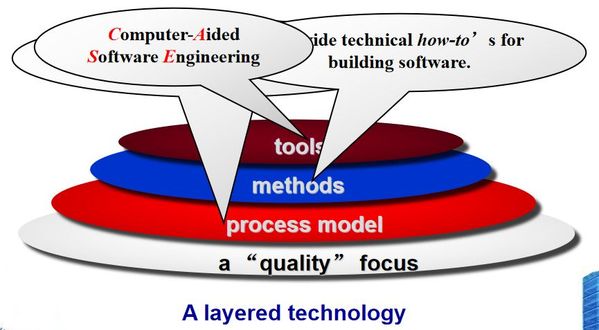

题库解析
第一章 软件的本质
1
Which question no longer concerns the modern software engineer?
A) Why does computer hardware cost so much?
B) Why does software take a long time to finish?
C) Why does it cost so much to develop a piece of software?
D) Why can’t software errors be removed from products prior to delivery?
【答案】A
【解析】
A.根据摩尔定律，集成电路上可容纳的晶体管数目，每18-24个月便会增加一倍。现在计算机硬件价格已经不再昂贵。
B.C.D.仍为现在软件工程面临的普遍问题。
2
Software is a product and can be manufactured using the same technologies used for other engineering artifacts.
A) True
B) False
【答案】B
【解析】
软件工程需求变化迅速，往往需要根据迅速变化的需求进行迭代升级，而其他许多产品的需求是相对稳定的，因此使用的开发技术也不尽相同。
3
Software deteriorates rather than wears out because
A) Software suffers from exposure to hostile environments
B) Defects are more likely to arise after software has been used often
C) Multiple change requests introduce errors in component interactions
D) Software spare parts become harder to order
【答案】C
【解析】
C项正确，需求的频繁变化导致软件版本的迅速更新，版本更新时往往会引入新的bug，这些bug只有充分获得用户反馈才能较好地修复。此外，随着迭代的不断进行，软件更新的成本也会不断上升。
A, B, D项显然错误。
4
WebApps are a mixture of print publishing and software development, making their development outside the realm of software engineering practice.
A) True
B) False
【答案】B
【解析】
网络应用是软件工程实践的一个重要组成部分。
5
There are no real differences between creating WebApps and MobileApps.
A) True
B) False
【答案】B
【解析】
移动应用程序是为一个特定的平台开发的；网络应用并非原生于某一系统，不需要下载或安装。移动应用程序可以离线工作，而网络应用不能。
6
In its simplest form an external computing device may access cloud data services using a web browser.
A) True
B) False
【答案】A
7
Product line software development depends the reuse of existing software components to provide software engineering leverage.
A) True
B) False
【答案】A
【解析】正确，生产线软件开发依赖于重用现有的软件组件。
第二章 软件工程
1
Which of the items listed below is not one of the software engineering layers?
A) Process
B) Manufacturing
C) Methods
D) Tools
【答案】B
【解析】
软件工程的四个层次：

（1）高质量目标(a quality focus)
（2）过程模型(process model)：一种高质量的路线图(road map)，保证及时、高质量的结果。
（3）方法：包括需求分析、设计、测试、构造等，即如何构造软件。
（4）工具：CASE(Computer-Aided Software Engineering)
2
Software engineering umbrella activities are only applied during the initial phases of software development projects.
A) True
B) False
【答案】B
【解析】
软件工程的支撑性活动贯穿软件开发全过程，包括以下内容：
- 项目管理(Project management)
- 质量保证(Quality assurance)
- 工作产品生产(Work product production)
- 评估(Measurement)
- 正式技术评审(Formal technical reviews)
- 配置管理(Configuration management)
- 可重用性管理(Reusability management)
- 风险管理(Risk management)
3
Which of these are the 5 generic software engineering framework activities?
A) communication, planning, modeling, construction, deployment
B) communication, risk management, measurement, production, reviewing
C) analysis, designing, programming, debugging, maintenance
D) analysis, planning, designing, programming, testing
【答案】A
【解析】
软件工程通用过程框架(Generic Process Framework)
(1)交流(communication)：客户沟通、需求汇总。
(2)规划(planning)：建立工程计划，描述技术风险，列举资源需求，定义工作规划。
(3)建模(modeling)：建立模型，以帮助开发者和用户理解需求、软件设计。
(4)构造(construction)：代码生成、测试。
(5)部署(Deployment)：软件部署（如：制作安装包、安装程序，写指导文档，培训等；云时代需将软件部署至云上，部署更为复杂）
4
Planning ahead for software reuse reduces the cost and increases the value of the systems into which they are incorporated.
A) True
B) False
【答案】A
【解析】
提前规划软件的可重用性，确实可以减少开发成本，提供价值。
5
The essence of software engineering practice might be described as understand the problem, plan a solution, carry out the plan, and examine the result for accuracy.
A) True
B) False
【答案】A
【解析】
说法合理。
6
In agile process models the only deliverable work product is the working program.
A) True
B) False
【答案】B
【解析】
错误，还包括文档、数据等。
7
A most software development projects are initiated to try to meet some business need.
A) True
B) False
【答案】A
【解析】
正确，大部分软件的目的是满足商业需求，为用户创造价值。
8
In general software only succeeds if its behavior is consistent with the objectives of its designers.
A) True
B) False
【答案】B
【解析】
软件的成功高度依赖于是否与用户需求一致。
第三章 软件过程结构(Software Process Structure)
1
Which of the following are recognized process flow types?
A) Concurrent process flow
B) Iterative process flow
C) Linear process flow
D) Spiral process flow
E) both a and c
【答案】E
【解析】
recognized/prescriptive process flow指惯例过程流，包括线性模型、V模型、增量模型、演化式模型等。
2
The communication activity is best handled for small projects using six distinct actions (inception, elicitation, elaboration, negotiation, specification, validation).
A) True
B) False
【答案】B
【解析】
3
A good software development team always uses the same task set for every project to insure high quality work products
A) True
B) False
4
Software processes can be constructed out of pre-existing software patterns to best meet the needs of a software project.
A) True
B) False
5
Which of these are standards for assessing software processes?
A) SEI
B) SPICE
C) ISO 9000
D) ISO 9001
E) both b and d